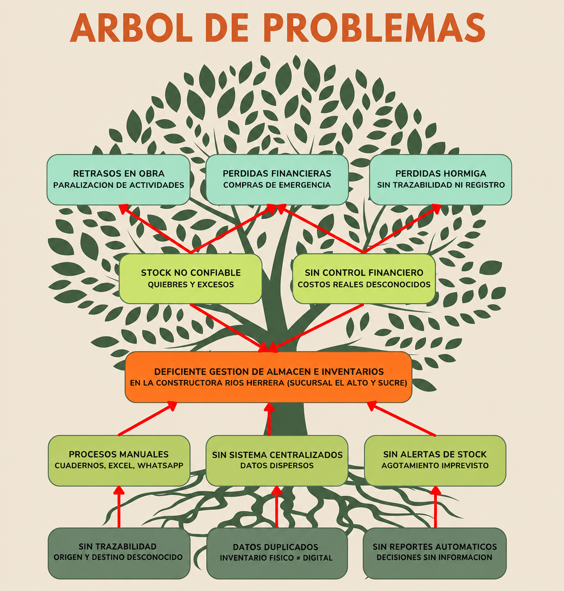
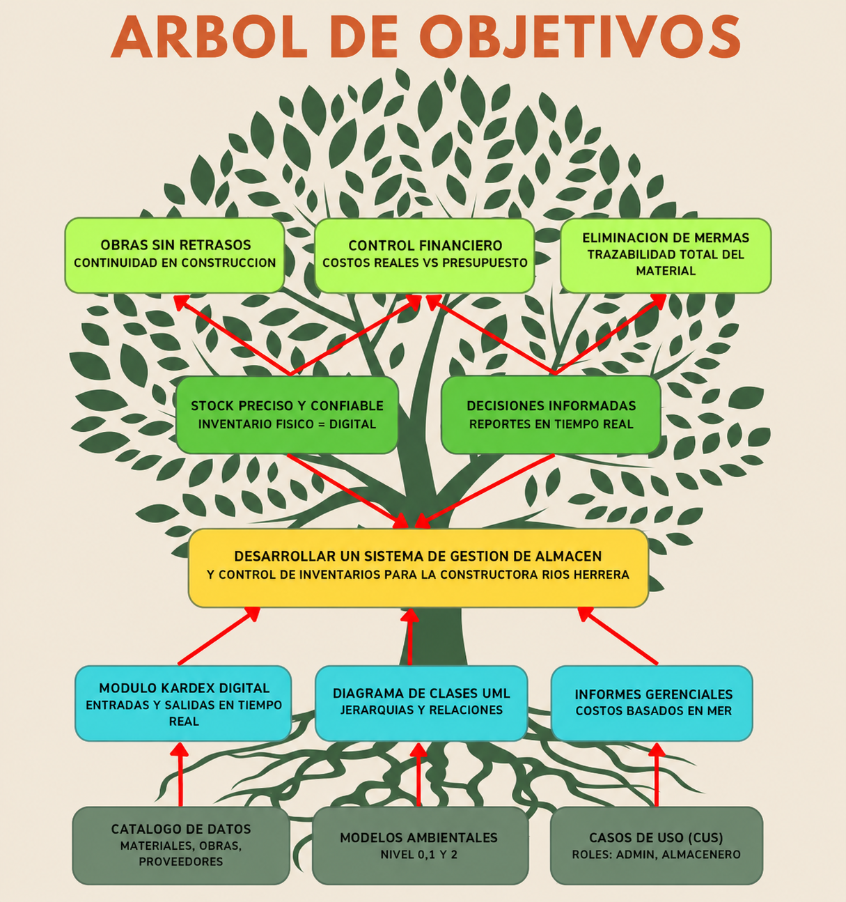

Hoy en día, para el sector de la construcción, modernizarse digitalmente ya no es un lujo, sino una necesidad para sobrevivir. Para empresas con operaciones en distintas ciudades, como la "Constructora Ríos Herrera", que trabaja simultáneamente en las ciudades de Sucre y El Alto, administrar correctamente los materiales es la clave para que el negocio sea rentable. Sin embargo, el uso de métodos manuales como: cuadernos físicos, hojas de Excel sueltas y mensajes por WhatsApp; provoca que la información se pierda o se desordene entre la oficina y la obra.
Este desorden en el trabajo diario genera problemas graves: no se sabe con exactitud dónde están los materiales, existen diferencias entre lo que se ve en el control manual y lo que realmente hay en el almacén, y ocurren las pérdidas, es decir, material que desaparece sin registro. Además, al no tener una visión clara de lo que queda en almacenes, se terminan haciendo compras de emergencia más caras o, peor aún, se detiene la construcción porque falta algún material básico.
Para solucionar esto, este proyecto propone crear un "Sistema de Gestión de Almacén y Control de Inventarios", diseñado para centralizar toda la información y automatizar las reglas de control de almacenes e inventarios de la empresa. Para asegurar que el software realmente funcione en la operación diaria de la obra, utilizaremos la metodología de trabajo SCRUM. Esta forma de trabajo permite construir el sistema por partes, probando y corrigiendo cada avance rápidamente.
La Constructora Ríos Herrera actualmente presenta diversas dificultades en la gestión de almacén y el control de inventarios, debido a que gran parte de sus procesos administrativos y operativos se realizan de forma manual mediante planillas físicas, hojas de cálculo en Excel y comunicaciones informales a través de WhatsApp. La ausencia de un sistema centralizado y automatizado provoca desorganización en el registro, control y seguimiento de los materiales utilizados en las distintas obras de construcción.
El manejo manual de la información genera frecuentes errores en el registro de entradas y salidas de materiales, ocasionando inconsistencias entre el inventario físico existente y el inventario registrado. Asimismo, la información puede duplicarse, extraviarse o actualizarse de manera tardía, dificultando la obtención de datos confiables y en tiempo real para la toma de decisiones.
Otro problema importante es la falta de trazabilidad de los materiales y herramientas, ya que no existe un control adecuado que permita identificar con precisión qué recursos fueron asignados a cada proyecto. Esto ocasiona pérdidas de materiales, uso ineficiente de recursos y dificultades para detectar responsabilidades en caso de faltantes o errores.
Además, la empresa enfrenta retrasos en la ejecución de obras debido a la falta de control sobre el stock disponible, lo que provoca compras de emergencia con incremento de costos operativos, así como excesos de inventario por compras innecesarias.
La falta de reportes automatizados y consolidados limita el análisis y seguimiento de la información relacionada con inventarios, movimientos de almacén y consumo de materiales por proyecto, dificultando la planificación de compras y el control financiero.
Actualmente, muchas empresas constructoras requieren sistemas informáticos que permitan administrar de manera eficiente sus recursos materiales, humanos y financieros, debido a que la transformación digital se ha convertido en un factor clave para mejorar la productividad y competitividad empresarial.
De acuerdo con la encuesta realizada a la Constructora Ríos Herrera, la empresa cuenta con:
Estos métodos provoca dificultades en la actualización de datos, pérdida de tiempo y errores en la información registrada. Existen problemas relacionados con la trazabilidad de materiales, diferencias entre el inventario real y el registrado, desperdicio de insumos y retrasos ocasionados por la falta de materiales en obra.
Ante esta situación, surge la necesidad de desarrollar un Sistema de Gestión de Almacén y Control de Inventarios que permita integrar la información, automatizar procesos y mejorar el control de materiales.
En la actualidad, la Constructora Ríos Herrera presenta dificultades en la administración y control de inventarios debido a que gran parte de sus procesos se realizan manualmente. El registro de materiales, solicitudes desde obra, control de asistencia y seguimiento de recursos se efectúan mediante hojas de cálculo, documentos físicos y aplicaciones de mensajería, lo que limita la disponibilidad de información en tiempo real.
La ausencia de un sistema centralizado ocasiona problemas como:
Por ello, se plantea el desarrollo de un Sistema de Gestión de Almacén y Control de Inventarios que permita optimizar los procesos administrativos y operativos, mejorar la trazabilidad de materiales, automatizar registros y proporcionar información confiable para la gestión eficiente de las obras.
¿De qué manera mejorará la gestión de almacén y el control de inventarios en la Constructora Ríos Herrera mediante el desarrollo de un sistema informático?
La implementación de un sistema de gestión de almacén y control de inventarios, fundamentado en un modelado de arquitectura interna (clases, procesos y comportamiento), permitirá la transición de un entorno de gestión manual basado en registros físicos y mensajería instantánea hacia un ecosistema digital centralizado y auditable.
Se postula que la integración de una estructura estática de datos y un modelo dinámico de procesos mitigará la pérdida de materiales por falta de trazabilidad conocida como "hormigueo" y reducirá las discrepancias entre el inventario físico y el digital en las sucursales de Sucre y El Alto.
Asimismo, la sistematización de la lógica de persistencia y la sincronización en tiempo real facultará a la Constructora Ríos Herrera para gestionar con precisión la volatilidad de los costos de los materiales de construcción, optimizando la toma de decisiones presupuestarias y eliminando los tiempos muertos derivados del desabastecimiento en obra.
La empresa Ríos Herrera maneja una gran cantidad de materiales que se trasladan o usan, además de trabajadores que manipulan estos materiales, con un registro mediante hojas de cálculo, por lo cual presenta variaciones y limitaciones.
El desarrollo del sistema responde a la necesidad de mejorar la organización y coordinación del personal. Permitirá optimizar la interacción entre administradores, ingenieros, almaceneros y técnicos, facilitando el acceso a información en tiempo real y reduciendo errores humanos.
La empresa ha presentado pérdidas económicas. El sistema permitirá llevar mejor control de materiales, evitar pérdidas y desperdicios, facilitando el seguimiento de costos y comparación con presupuestos.
El desarrollo de un sistema digital permitirá centralizar toda la información, implementar reportes automáticos, modernizando la gestión y haciendo los procesos más rápidos, seguros y eficientes.
Se empleará un método analítico-sintético y de carácter descriptivo:
Para la recolección de requerimientos y datos técnicos se utilizarán los siguientes instrumentos:
Aplicada a la Gerencia General para determinar jerarquía funcional, roles de usuario y puntos críticos de pérdida de recursos.
Revisión exhaustiva de planillas, órdenes de compra y reportes de avance para definición de atributos en el Diagrama de Clases.
Evaluación de la comunicación interna vía WhatsApp y llamadas para el diseño de un módulo de requerimientos digitales que reemplace los canales informales.
El presente árbol de problemas permite identificar y estructurar de manera visual las causas y efectos del problema central detectado en la Constructora Ríos Herrera. A partir del diagnóstico realizado se identificó como problema central la deficiente gestión de almacén y control de inventarios, originada principalmente por el uso de registros manuales, la ausencia de un sistema centralizado y la falta de trazabilidad de los materiales. Este problema genera efectos directos como la inexactitud del stock y la ausencia de control financiero, que a su vez derivan en consecuencias más graves para la empresa, tales como retrasos en la ejecución de obras, pérdidas económicas por compras de emergencia y pérdida de insumos por falta de registro conocida como hormigueo.

Fuente: Elaboración propia (2026)
El árbol de objetivos se construye como la contraparte positiva del árbol de problemas, transformando cada situación negativa identificada en un estado deseable a alcanzar. El objetivo general consiste en desarrollar un sistema informático de gestión de almacén y control de inventarios para la Constructora Ríos Herrera, el cual se sustenta en medios técnicos concretos como la elaboración del catálogo de datos, los modelos ambientales, el diagrama de clases UML. El logro de estos medios permitirá obtener fines directos como un inventario físico coherente con el registro digital y la disponibilidad de reportes en tiempo real, contribuyendo en última instancia a la continuidad de las obras, la eliminación del hormigueo y el control efectivo de los costos de construcción.

Fuente: Elaboración propia (2026)